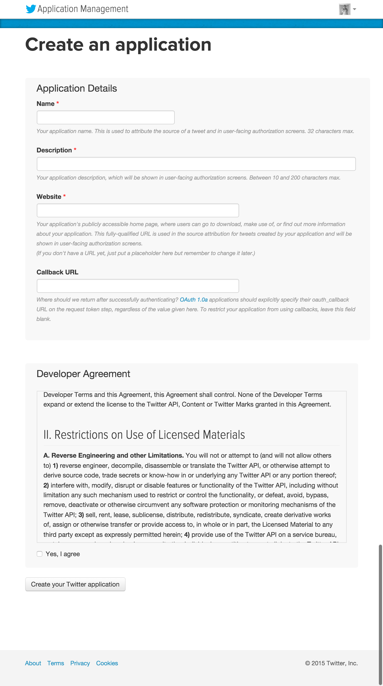

Twitter Developer登録
Twitter認証のログインを行うためアプリケーション登録を済ませておいてください。
Twitterにログインした状態で https://apps.twitter.com/ にアクセスします。
「Create New App」ボタンでアプリケーション登録を行います。

Application Detailsで、以下の内容を登録します。
- Name
- Description
- Website
- Callback URL
Twitter全体で、Nameは重複不可となっています。Descriptionは適当な文章で問題ありません。
Website / Callback URL には http://127.0.0.1:3000 を入力してください。
すべて入力したら利用規約に同意し、アプリケーションを作成してください。